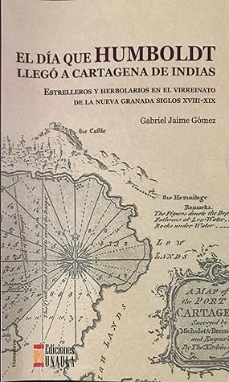

El día que Humboldt llegó a Cartagena de Indias
Reseña por Jorge I. Zuluaga

Ver reseña en GoodReads (necesita cuenta)
Con este párrafo comienza este hermoso y erudito relato (¿novela?) de Gabriel Jaime Gómez; un párrafo que, disculparán los más eruditos la falta de proporción, podría quedar grabado en la historia de las letras de Colombia (disculpen la cacofonía) como quedó, en las de su literatura fantástica, el primer párrafo de Cien años de soledad.
Y no es que Gabriel Gómez sea un Gabriel García y este relato se compare con esa obra inmortal; sino porque el párrafo en cuestión, que le vino a Gabriel Jaime Gómez en sueños (como él mismo lo confesó), parece también el comienzo de la «epopeya científica» que significó la accidentada Expedición Botánica que inició Mutis y que, como reza la presentación de este libro, marcó, posiblemente, el inicio de la ciencia en Colombia.
Y es que la «Colombia boba» de Gómez es tan singular como la Macondo de García Márquez, y los personajes de este relato, tan heroicos y singulares como Aureliano o Melquíades.
Debo confesar que, como científico colombiano, sabía menos de don José Celestino Mutis y de Francisco José de Caldas de lo que debería. Este relato, tal vez tardíamente en mi vida (o tal vez en el momento correcto), me ha abierto el camino para conocer mejor a estos «héroes» de la ciencia «colombiana» (si me permiten el anacronismo).
Lo mejor de su libro es que Gabriel Jaime escogió contarnos las peripecias que vivieron Mutis, Caldas y Rizo (un héroe anónimo que hay que conocer mejor) durante el más «bobo» de los períodos de la historia de Colombia, y su relación con Humboldt, Bonpland y Boussingault (los seis son los protagonistas de la historia) en «clave literaria». Pudo hacerlo, como destilan los historiadores más sesudos, en forma de una aburrida (al menos para quienes no somos académicos de la historiografía) sucesión de personajes y hechos. Pero no. Al volver literatura la vida de estos personajes, los lectores, como era de esperarse, nos acercamos más a su humanidad, a lo que pasaba en sus cabezas, a lo que sentían. Yo, por lo menos, he quedado admirado y conmovido.
Si bien el libro se llama El día que Humboldt llegó a Cartagena de Indias, y respetando las razones que el autor o sus editores tuvieron para ponerle ese nombre, es claro que el corazón de todo el relato es la Expedición Botánica y, repito, como descubrí antes, su accidentado origen, desarrollo y destino final.
Yo (tal vez en mi ignorancia editorial) habría titulado el libro «La patria que murió sin nacer».
La razón de mi elección es el más conmovedor capítulo de este relato (y que posiblemente también sea el más conmovedor de toda la historia de la ciencia en Colombia); el capítulo que narra la penosa muerte de Francisco José de Caldas y sus súplicas al bobalicón español que tenía en sus manos la vida de este genio. El capítulo en cuestión termina con este bello párrafo:
«Esa noche no se vieron las estrellas, ni las niñas jugaban golosa, ni las campanas tocaron a la oración. Las clarisas embolataron al sacristán y le dijeron que se fuera temprano para la casa, que sor Inés lo iba a reemplazar. ¡La patria había muerto sin nacer!»
¡Qué desperdicio haber matado a Caldas! Todos sus proyectos, dignos de los más encumbrados ideales de la Ilustración, a pesar de haber vivido tan lejos de ella iluminando la oscuridad intelectual de la patria boba con su solitaria luz; todos ellos echados por la borda por unos conquistadores vengativos e ignorantes. ¿Qué habría sido de Colombia si los proyectos de Mutis y Caldas hubieran prosperado?
Y a todas estas, ¿dónde aparece Humboldt en el relato? En todas partes, naturalmente. Sin embargo, como sucede con muchas obras literarias, con la misma historia, e incluso con algunas creaciones de la cultura popular, a veces el protagonismo, sea por voluntad del autor o por la simpatía del lector, se lo roban otros personajes, aparentemente «secundarios». Así pasa con Sancho en el Quijote, con Melquíades o Úrsula en Cien años de soledad, con el Gollum en El hobbit y hasta con Bart en Los Simpson.
Asimismo, en este relato, que estaba originalmente destinado a describir la llegada y travesía del barón Humboldt por el Virreinato de la Nueva Granada, el protagonismo se lo termina robando José Celestino Mutis.
Como sucede con todas las novelas históricas, es difícil, después de leer el relato de Gabriel Jaime, pensar que los personajes que recrea no hayan sido así en realidad. Esto, más que un engaño, es el oculto deseo del lector de creer que conoció a esos personajes admirables. Es difícil, pues, con las páginas de este relato, no conmoverse con la personalidad afable, la sabiduría y hasta la procrastinación de Mutis, el espíritu aguerrido y visionario de Caldas (¡fantástico!), el talento humilde de Francisco Rizo o la humanidad y sensibilidad de Humboldt.
La contraportada del libro describe a Gabriel Jaime como un «aficionado». Sin embargo, en las páginas de este libro, yo no veo dónde está lo de «aficionado».
Yo, que sí podría llamarme un «aficionado» a la literatura y la historia, leo a un autor juicioso y perfeccionista, con un vocabulario rico y preciso (más propio de los tiempos de Mutis, como debería ser); alguien que parece saber tanto de botánica como Mutis, sus pintores y aprendices. Su escrito refleja claramente las horas que debió pasar leyendo las cartas y libros de los personajes; los muchos años de experiencias, visitas, estudio y conversación con otros profesionales de la historia que le permitieron conocer su época y costumbres.
Si todo eso no es propio de un «profesional» (no de un «doctor», si quieren), no sé entonces qué puede significar serlo.
Creo que es hora de que dejemos de hablar de «aficionados» para referirnos en realidad a «profesionales no académicos»; es decir, a personas que se dedican a una tarea profesionalmente, como lo hace Gabriel Jaime con la historia y la literatura, pero que no tienen títulos, ni pertenecen a academias que los «acrediten». El trabajo de estos «profesionales no académicos» es apreciado por los mismos académicos. ¿Por qué entonces no darles el apelativo que merecen?
Termino esta reseña volviendo sobre Humboldt.
Uno de los capítulos finales contiene un hermoso diálogo entre Boussingault y el barón, imaginado por Gabriel Jaime. En uno de los apartes de este diálogo imaginario, Gabriel Jaime, a través de Humboldt, señala:
«Yo he tratado toda mi vida de pintar cuadros de la naturaleza. De enlazar los fenómenos del cielo y de la tierra, penetrar en el juego de fuerzas que lo producen y pintar, en fin, con animado lenguaje, una imagen de la realidad [...] Creo en la unidad armoniosa de la naturaleza [y] creo que está más allá del conocimiento positivo. Es algo que no sé explicar con palabras, como Goethe, tampoco puedo hacerlo con las formas primordiales. Esta armonía es accesible solo a través de las emociones más vividas y profundas».
Estoy seguro de que si un Humboldt maduro volviera a la vida y leyera este pasaje, reconocería sus palabras, aunque no podría precisar exactamente cuándo las dijo.
¡No dejen de leer este libro!
Fue editado por primera vez en 2002. ¡Qué suerte tengo yo de haberlo encontrado nuevamente!